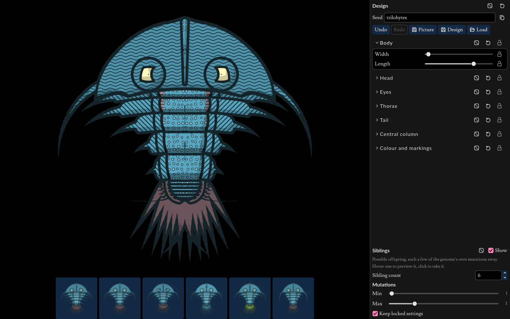

Trilobytes
The interactive parts of this page require javascript to be enabled.
(There are no ADs or tracking scripts installed on this website!).

The tech demo is a download of around 13 MB, and is made for a computer with a mouse: on a phone or other small screen the controls are too small to use comfortably, and it runs slowly. The first time it starts, the page can freeze for up to half a minute while your graphics card prepares the trilobyte's shader; later visits start straight away.
Trilobytes is an evolution simulator in a top down "petri dish" style, where individuals compete for food and can evolve new body parts and brain connections.
This tech demo shows one of its systems on its own: the designer used to create the trilobytes' procedural looks. Shape each part with sliders, colours and lists, lock what you like, roll random designs or pick from a row of possible offspring, then save your trilobyte as a picture that can be loaded back in.
Controls
Designing
The Design panel holds every part's settings. Parts fold open one at a time.
| Edit a part | Click it on the trilobyte (or tap it); its settings open and it gets a thick outline |
| See what a part is | Hover over the trilobyte; the part under the cursor gets a thin ring |
| Change a setting | Its slider, colour swatch, list or colour picker |
| Randomise or reset everything | The dice or reset icon by the Design title |
| Randomise or reset one part or group | The dice or reset icon in its title bar |
| Keep something when randomising | The padlock on a setting, group or part |
| Undo and redo | The buttons, or Ctrl Z and Ctrl Shift Z (or Ctrl Y) |
Siblings, seeds and saving
Siblings below the view are possible offspring of your design.
| Preview a sibling | Hover over it |
| Take a sibling's looks | Click or tap it |
| New siblings | The dice by the Siblings title, which also sets how many, how different, and whether they keep locked settings |
| Re-roll a known trilobyte | Type a number or any words in Seed and press Enter; the copy icon copies the seed |
| Save a picture | Picture: a PNG with the design hidden inside, so it loads back |
| Save the design as text | Design: a JSON file |
| Load | Load, then pick a saved PNG or JSON |